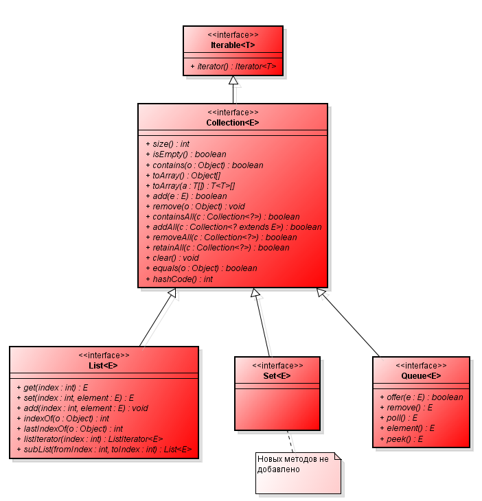

Collections
Вопросы к собеседованию
Вопросы:
Базовые интерфейсы
В библиотеке коллекций Java существует два базовых интерфейса,
реализации которых и представляют совокупность всех классов коллекций:
-
Collection - коллекция содержит набор объектов (элементов). Здесь определены основные
методы для манипуляции с
данными, такие как вставка (add, addAll), удаление (remove, removeAll, clear), поиск (contains)
-
Map - описывает коллекцию, состоящую из пар “ключ — значение”. У каждого ключа только
одно значение, что соответствует математическому понятию однозначной функции или отображения.
Такую коллекцию часто называют еще словарем (dictionary) или ассоциативным массивом (associative array).
Никак НЕ относится к интерфейсу Collection и является самостоятельным.
Хотя фреймворк называется Java Collections Framework, интерфейс Map и его реализации входят во фреймворк также!
Интерфейсы Collection и Map являются базовыми, но они не есть единственными.
Их расширяют другие интерфейсы, добавляющие дополнительный функционал.
Интерфейс Collection

Интерфейс Collection не является базовым. Он расширяет
интерфейс Iterable, у которого есть только один метод iterator().
Это значит что любая коллекция будет возвращать итератор, а также ее можно без всяких трудностей использовать в
конструкции foreach.
Итератор – объект, который абстрагирует за единым интерфейсом доступ к элементам коллекции. Итератор это паттерн
позволяющий получить доступ к элементам любой коллекции без вникания в суть ее реализации.
Интерфейс Collection расширяют интерфейсы List, Set и Queue:
-
List
Это упорядоченная коллекция,
в которой допустимы дублирующие значения.
Иногда их называют последовательностями (sequence).
Элементы такой коллекции пронумерованы,
начиная от нуля, к ним можно обратиться по индексу.
-
Set
Описывает коллекцию, не содержащую повторяющихся элементов.
Это соответствует математическому понятию множества (set).
-
Queue
Для хранения элементов в порядке, нужном для их обработки.
В дополнение к базовым операциям интерфейса Collection, очередь предоставляет дополнительные операции
вставки, получения и контроля.
Реализации интерфейса List
Красным выделены интерфейсы, зеленым – абстрактные классы, а синим готовые реализации.
Здесь не вся иерархия, а только основная её часть.
Mежду интерфейсом и конкретной реализацией коллекции существует несколько абстрактных классов.
Это сделано для того, что бы вынести общий функционал в абстрактный класс, таким образом реализовать повторное
использование кода.
ArrayList – пожалуй самая часто используемая коллекция. Он инкапсулирует в себе
обычный массив, длина которого может увеличиваться при добавлении новых элементов. Так как ArrayList использует
массив, то время доступа к элементу по индексу минимально (В отличии от LinkedList). При удалении произвольного
элемента из списка, все элементы находящиеся «правее» смещаются на одну ячейку влево, при этом реальный размер
массива (его емкость, capacity) не изменяется. Если при добавлении элемента, оказывается, что массив полностью
заполнен, будет создан новый массив размером (n * 3) / 2 + 1, в него будут помещены все элементы из старого
массива + новый, добавляемый элемент.
LinkedList – Двусвязный список. Это структура данных, состоящая из узлов, каждый из
которых содержит как
собственно
данные, так и две ссылки («связки») на следующий и предыдущий узел списка. Доступ к произвольному элементу
осуществляется за линейное время (но доступ к первому и последнему элементу списка всегда осуществляется за
константное время — ссылки постоянно хранятся на первый и последний, так что добавление элемента в конец списка
вовсе не значит, что прийдется перебирать весь список в поисках последнего элемента).
Реализации интерфейса Set
HashSet – коллекция, не позволяющая хранить одинаковые объекты (как и любой Set).
HashSet инкапсулирует в себе объект HashMap (то-есть использует для хранения хэш-таблицу).
Хеш-таблица хранит информацию, используя, так называемый, механизм хеширования, в котором содержимое ключа
используется для определения уникального значения, называемого хеш-кодом.
Этот хеш-код затем применяется в качестве индекса, с которым ассоциируются данные, доступные по этому ключу.
Если Вы хотите использовать HashSet для хранения объектов своих классов, то вы
должны переопределить методы hashCode() и equals(), иначе два логически-одинаковых объекта
будут считаться разными по хеш-коду, так как при добавлении элемента в коллекцию будет вызываться метод
hashCode() класса Object (который скорее-всего вернет разный хэш-код для ваших объектов).
Класс HashSet не гарантирует упорядоченности элементов, поскольку процесс
хеширования сам по себе обычно не порождает сортированных наборов. Если нужны сортированные наборы, то
лучшим выбором может быть другой тип коллекций - TreeSet.
LinkedHashSet
– поддерживает связный список элементов набора в том порядке, в котором они вставлялись.
Это позволяет организовать упорядоченную итерацию вставки в набор. То есть, когда идет перебор объекта класса
LinkedHashSet с применением итератора, элементы извлекаются в том порядке, в каком они были добавлены.
TreeSet
– коллекция, которая хранит свои элементы в виде упорядоченного по значениям дерева. TreeSet инкапсулирует в
себе TreeMap, который в свою очередь использует сбалансированное бинарное красно-черное дерево
для хранения элементов. TreeSet хорош тем, что для операций add, remove и contains потребуется гарантированное
время log(n).
Реализации интерфейса Queue
PriorityQueue
– единственная прямая реализация интерфейса Queue (не считая LinkedList, который больше является
списком, чем очередью).
Реализации интерфейса Map
Интерфейс Map соотносит уникальные ключи со значениями. Ключ — это объект, который используется для
последующего извлечения данных. Задавая ключ и значение, можно помещать значения в объект карты.
После того как это значение сохранено, можно получить его по ключу.
HashMap
Реализация основана на хэш-таблицах, реализует интерфейс Map.
Ключи и значения могут быть любых типов, в том числе и null.
Данная реализация не дает гарантий относительно порядка элементов.
LinkedHashMap
Реализация расширяет класс HashMap.
Класс создает связный список элементов в карте, расположенных в том порядке,
в котором они вставлялись. Это позволяет организовать перебор карты в порядке вставки.
То есть,когда происходит итерация по коллекционному представлению объекта класса LinkedHashMap, элементы будут
возвращаться в том порядке, в котором они вставлялись.
Также можно создать объект класса LinkedHashMap, возвращающий свои элементы в том
порядке, в котором к ним в последний раз осуществлялся доступ.
TreeMap
Красно-черное дерево реализующее интерфейс NavigableMap.
Коллекция сортируется по естественному упорядочиванию (natural ordering) ее ключей
или используя интерфейс Comparator который задается при создании
коллекции.
Эта имплементация гарантирует время доступа log(n) для следующих методов:
containsKey,
get,
put, и
remove
WeakHashMap
Основан на хэш-таблицах, реализует интерфейс Map с так называемыми слабыми ключами (weak keys).
Пара в данной коллекции автоматически будет удалена когда ссылка на ключ больше нигде не используется. Другими
словами, нахождение объекта представленного ключем в данной коллекции не блокирует сборщик мусора от зачистки.
После того как ключ будет зачищен вся пара будет удалена из коллекции.
Другие коллекции
Их еще называют "устаревшими".
Но нет аннотации @Deprecated или каких-либо иных, которые бы запрещали их использование в
коде.
Enumeration
Интерфейс. В современной версии Java рекомендуется применять Iterator.
Dictionary
Абстрактный класс, аналог интерфейса Map.
Реализации не имеет, рекомендуют его рассматривать как интерфейс. Наиболее известная реализация – Hashtable.
Hashtable
Класс. Имплементирует классическую структуру данных – хэш таблицу.
В современных версиях Java рекомендуется использовать HashMap.
Vector
Класс. Аналог класса ArrayList.
Поддерживает упорядоченный список элементов, хранимых во "внутреннем" массиве.
Stack
Класс. Производный от Vector.
Добавлены методы "вталкивания" (push) и "выталкивания" (pop) элементов, так что список может трактоваться в
терминах, принятых для описания структуры данных стека (stack).
Все методы Hashtable, Stack, Vector являются синхронизированными, что делает их менее эффективными в
однопоточных приложениях.
Синхронизированные коллекции
Получить синхронизированные объекты коллекций можно используя статические методы класса
Collections:
synchronizedMap и
synchronizedList
Map m = Collections.synchronizedMap(new HashMap());
List l = Collections.synchronizedList(new ArrayList());
Синхронизированные обрамления коллекций synchronizedMap и synchronizedList иногда называют условно потоко
безопасными – все операции в отдельности потокобезопасны, но последовательности операций, где управляющий поток
зависит от результатов предыдущих операций, могут быть причиной конкуренции за данные.
Условная безопасность потоков, обеспечиваемая synchronizedList и synchronizedMap представляет скрытую угрозу –
разработчики полагают, что, раз эти коллекции синхронизированы, значит, они полностью потокобезопасны, и
пренебрегают должной синхронизацией составных операций. В результате, хотя эти программы и работают при лёгкой
нагрузке, но при серьёзной нагрузке они могут начать выкидывать NullPointerException или
ConcurrentModificationException.
Кроме того всегда существует возможность "классической" синхронизации с помощью блока synchronized.